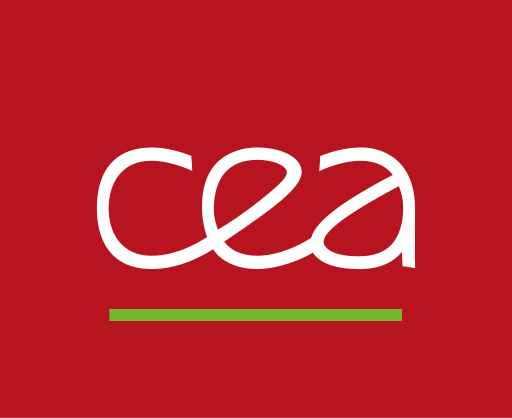
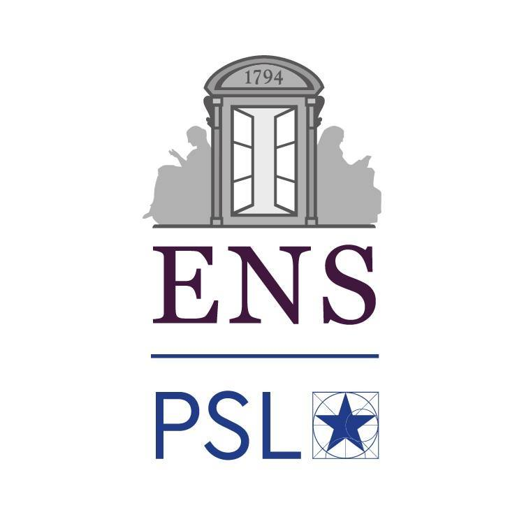

What is MILADY?
Machine Lerning DYnamics package MILADY 2.0 is an open-souce code created by scientists for scientists.
Our goal is to improve the accuracy and predictive power of atomistic simulations.
The code uses Machine Learning algorithms and prioritises the methods with a reasonable computational cost.
MILADY 2.0 is an open-souce package, distributed under Academic Software Licence (ASL).
Main functionalities:
Development of ML force fields, suitable for Molecular Dynamics simulations.
Development of regression models (metamodels) for prediction of materials properties, like vibrational entropy, HUMO-LUMO energies, etc.
Representation of structures in the feature space of atomic descriptors
Analysis, sparcification, and optimization of training databases
Advantages of MILADY
MILADYis designed for High Performance Computing (HPC). The code is well parallelized and has a good scalability. It uses MPI, PBLAS and ScaLapack.We provide a large choice of atomic descriptors.
We provide a possibility to perform various types of regression, including linear, quadratic, polynomial chaos, and kernel models.
MILADYis open-source package and we are happy to include your contributins to the code.
Contributors
The present architecture is designed by M.-C. Marinica and A. M. Goryaeva.
The development of MILADY package started in 2015 at SRMP, CEA Saclay, France.
Main contributors (in chronological order): M.-C. Marinica (2015-present at SRMP, CEA Saclay), W. Unn-Toc (2015-2016 at SRMP, CEA Saclay), A. M. Goryaeva (2018-present at SRMP, CEA Saclay), C. Lapointe (2018-2021 at SRMP, CEA Saclay), J. Baima (2019 - 2022 at SRMP, CEA Saclay), A. Allera (2022 - present, at SRMP, CEA Saclay), A. Zhong (2022 - present, at SRMP, CEA Saclay).
Software development support: Anida Khizar (LGLS, CEA Saclay), Christian Van Wambeke (LGLS, CEA Saclay).
Coupling MILADY with LAMMPS is performed by
Thomas D. Swinburne (CINaM, Marseille)
Contact
The questions and suggestions can be sent to our email . We will be happy to answer!
They appreciate and use MILADY
 {kind=link}
{kind=link}
{kind=link}
{kind=link}
{kind=link}